第38天：静态链接(中)
第38天：静态链接(中)
接上一篇文章。
寻找入口点
在生成目标文件的展示环节中，我们用的是 Linux 系统的链接器；
当时用的命令是：
ld test1.o test2.o start.o -melf_i386 -o test
start.o 源于 start.asm
为什么需要 start.asm 呢？
当我们在终端输入 ./a.out 时，到底发生了什么？
有人认为当敲出 ./a.out 并敲回车后，操作系统（内核）就开始执行 main 函数了。
其实不是这样的。这里面有很多复杂的细节。
从敲下回车到 main 函数执行，可以分成 2 个阶段：
第一阶段：
- 内核通过 execve() 系统调用加载程序；
- 解析 ELF 头和程序头表（Program Header Table）；
- 将 .text、.data 等段映射到进程虚拟内存；
- 将 CPU 指令指针（RIP/EIP）设置为 ELF 的入口点（Entry Point），即 _start。
这个 _start 可以看成是一个函数，由 glibc 的启动文件（如 crt1.o）提供，通常用汇编写成；
第二阶段：
执行 _start，主要的工作包括：
- 从栈上解析内核传入的 argc、argv[]、envp[]（命令行参数和环境变量）；
- 准备好调用 __libc_start_main 所需的寄存器/栈参数；
- 跳转到 __libc_start_main（C 函数）；
__libc_start_main 是 glibc 中的关键函数，会初始化线程系统，注册退出处理函数，调用全局构造函数等，最后才是调用用户写的 main 函数。
glibc（GNU C Library） 是 Linux 系统中最核心、最基础的 C 标准库实现，它为用户程序提供了与操作系统内核交互的标准接口（API），是几乎所有 Linux 应用程序运行所依赖的“桥梁”。
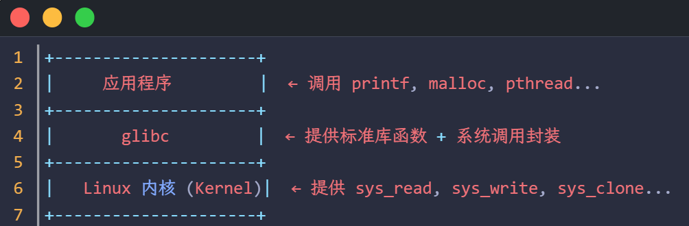
虽然程序的入口是 _start（通常由汇编编写，放在 crt1.o 中），但 _start 的唯一任务就是准备好参数，然后立即跳入 glibc 提供的 __libc_start_main。
一旦进入这个函数，程序就正式从“荒芜的汇编世界”进入了“功能齐全的 C 语言库世界”。
CRT 是 C Runtime Library（C 运行时库）它是 C 语言程序运行时所依赖的基础库的统称，可以理解为一个程序跑起来所需的“环境”总称。
具体来说，CRT 主要包括以下三个部分：
- 标准库函数的实现 (C Standard Library)
这是 CRT 最显而易见的部分，提供了 C 标准定义的各种 API 实现：
内存管理：如 malloc()、free() 等。
输入输出 (I/O)：如 printf()、scanf()、文件操作 fopen() 等。
字符串处理：如 strcpy()、strlen() 等。
数学运算、日期时间等工具函数。 - 程序的启动与退出支持 (Startup Code)
在 main() 函数执行之前，CRT 会先进行一系列初始化工作，并在 main() 结束后负责清理;
入口函数：操作系统加载程序后，实际先调用 CRT 的入口点（如 Windows 下的 mainCRTStartup），而非直接跳转到 main。
初始化环境：包括初始化全局变量、静态变量，准备堆内存（Heap），以及配置环境变量和命令行参数。
清理工作：当 main 返回后，CRT 会负责调用通过 atexit() 注册的函数，并最终调用操作系统的退出 API 关闭进程。 - 运行时的底层支撑 (Low-level Support)
CRT 还充当了程序与操作系统（OS）之间的“中转站”：
系统调用封装：将高级的 C 函数转换为底层操作系统的系统调用（System Calls）。
堆栈管理：维护程序运行所需的调用栈环境。
异常/错误处理：处理浮点数溢出、非法内存访问等运行时错误（Runtime Errors）
CRT 和 glibc 是什么关系呢？
简单来说：CRT 是一个“规格/标准”，而 glibc 是这个标准在 Linux 上的“具体实现”。例如在 Windows 下，CRT 就不是 glibc 了，而是微软提供的 MSVCRT.dll 或 UCRT。
另外，glibc 不仅仅实现了 C 运行时，它还是 Linux 系统的核心接口库。它比标准的 CRT 多了一些极其庞大的内容：包括 POSIX 扩展、本地化支持、动态链接器等等。
说了这么多，我们回到主题。我们的 start.asm 里面有什么？
里面最重要的函数就是 _start
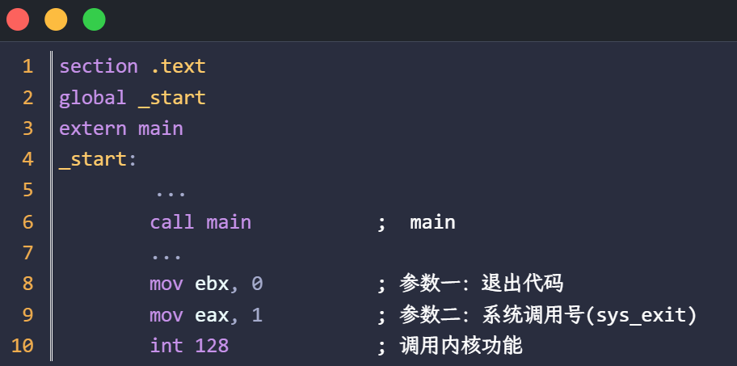
如果程序从 _start 开始执行
第 5 行，可以做一些初始化工作;
第 6 行，调用 main 函数;
第 7 行，可以做清理工作;
第 8~10 行，执行 sys_exit 系统调用。
sys_exit 是操作系统内核层面的一个系统调用，它的核心作用是终止当前进程。
为什么要调用 sys_exit 呢？或者说不调用它会发生什么？
首先是指令流溢出，CPU 执行完你的代码后，不会自动停下，而是继续向后读取内存中的“垃圾数据”并尝试将其作为指令执行。
其次是程序崩溃，由于后续内存通常不包含合法指令或属于不可执行区域，内核会立即触发 SIGSEGV 信号，强制杀死进程。你在终端会看到 Segmentation fault 报错。
有读者问，如果没有 _start，强制让程序从 main 函数执行会发生什么？
我们可以做个实验，指定程序入口为 main（用 -e main）
ld *.o -melf_i386 -e main
./a.out
运行结果:
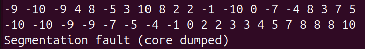
看来排序没有问题，但是排序完成后，触发了“段错误”。
这是为什么呢？
我们看 main 函数的汇编代码:
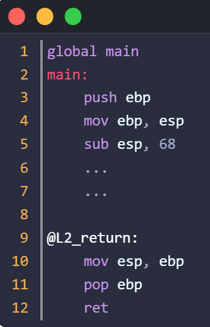
从本质上讲，main 函数和其他函数没有什么区别，包含同样的入口代码和出口代码；
用 main 作为入口，本质上是在链接的时候把 main 的虚拟地址填入文件头的 e_entry 字段。
当程序加载后， CPU 就会从 main 开始执行。3~5 行的代码没有什么问题；
当执行到 10~11 行，栈已经恢复为刚进入 main 时的样子，也没有问题；
但是执行到 ret 指令，就有问题了。因为 ret 指令会从栈顶取出 4 字节作为返回地址，然后跳到这个地址去执行。然而，刚进入 main 时，栈顶的数据是未知的，大概率是一个无效的地址，所以触发了“段错误”！
再回到前面的代码 _start
假设 main 函数不带参数，我们可以这样写:
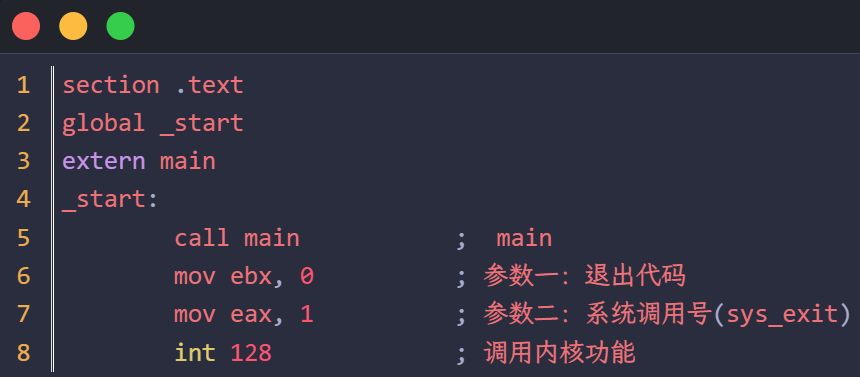
以上代码可以算是一个极简版的 crt;
把上面的代码编译成 .o，再和其他 .o 链接起来，并把 _start 的虚拟地址作为 elf 头的入口，就可以让 C 程序跑起来了。
当运行 ld 命令时，它会扫描所有输入的 .o 文件（目标文件）的全局符号表;
如果找到了 _start,它会将该符号对应的内存地址写入 ELF 文件头的 Entry point address 字段。
我们也模仿 ld, 把 _start 当成程序的入口点。
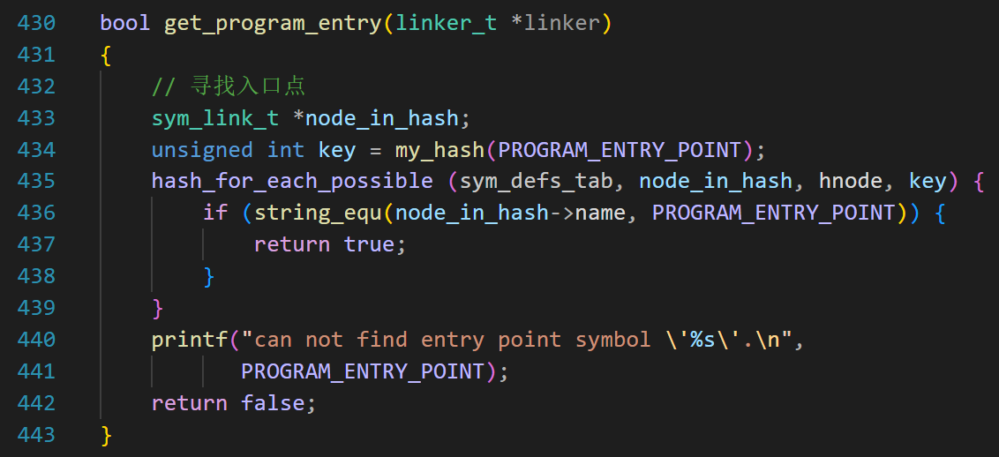
#define PROGRAM_ENTRY_POINT "_start"
第 435 行，遍历哈希表，查找 _start 符号，如果找不到，则报错。
地址分配
在之前的“程序头表”这节，我们已经讨论了段的偏移和虚拟地址。
这里总结一下：
1、首先是文件头，然后是程序头表，这部分占了一个独立的页面;
2、然后是代码段和数据段；每个段的起始地址必须按页对齐（对齐到 0x1000）;
3、对于 Linux 系统 32 位可执行文件，默认的基地址是 0x08048000；
4、段在文件内的偏移加上这个基地址，就是最终的虚拟地址。这一点可以从下图看出来（和上一篇文章的图一样）。
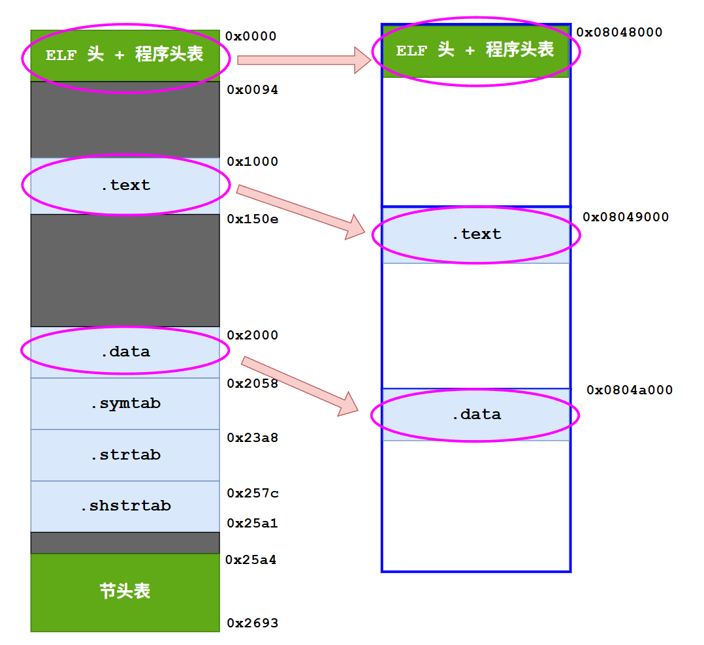
明白了以上规则，就可以看代码了。
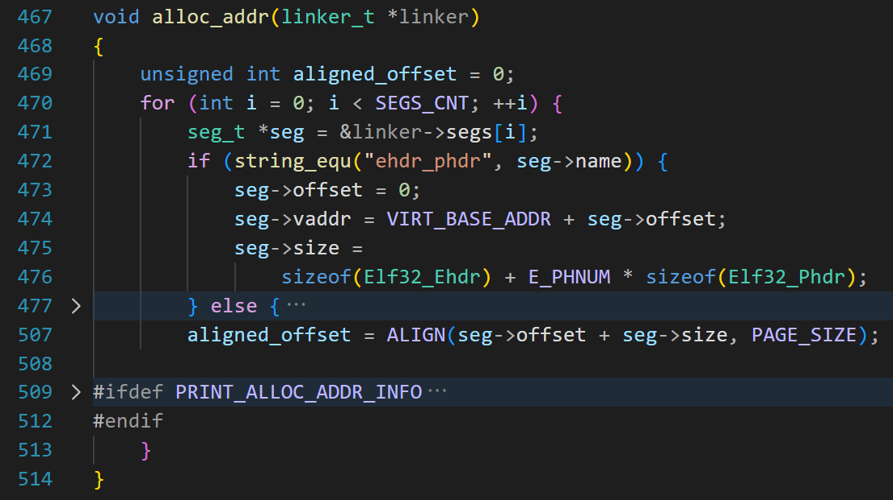
第 470 行，遍历 segs 数组。
此数组只有 3 个元素，在定义数组的时候，值如下：
1 | |
ehdr_phdr 表示文件头和程序头表，因为它们组成了一个可加载的段，而且是第一个段；
所以，执行第 473 行，seg->offset = 0; 意思是这个段在文件内的偏移是 0；
然后执行 seg->vaddr = VIRT_BASE_ADDR + seg->offset;
意思是段在文件内的偏移加上基址，就是虚拟地址。
VIRT_BASE_ADDR 是宏，如下第 1 行;
1 | |
第 3 行是我们用来对齐的宏;
第 475 行，求 seg->size，就是段的长度：文件头的长度加上头表项的大小 * 头表项的数目（E_PHNUM = 3）;
之后执行第 507 行，为下一个段做准备，把当前的地址对齐到 4096；
现在看 else 部分：
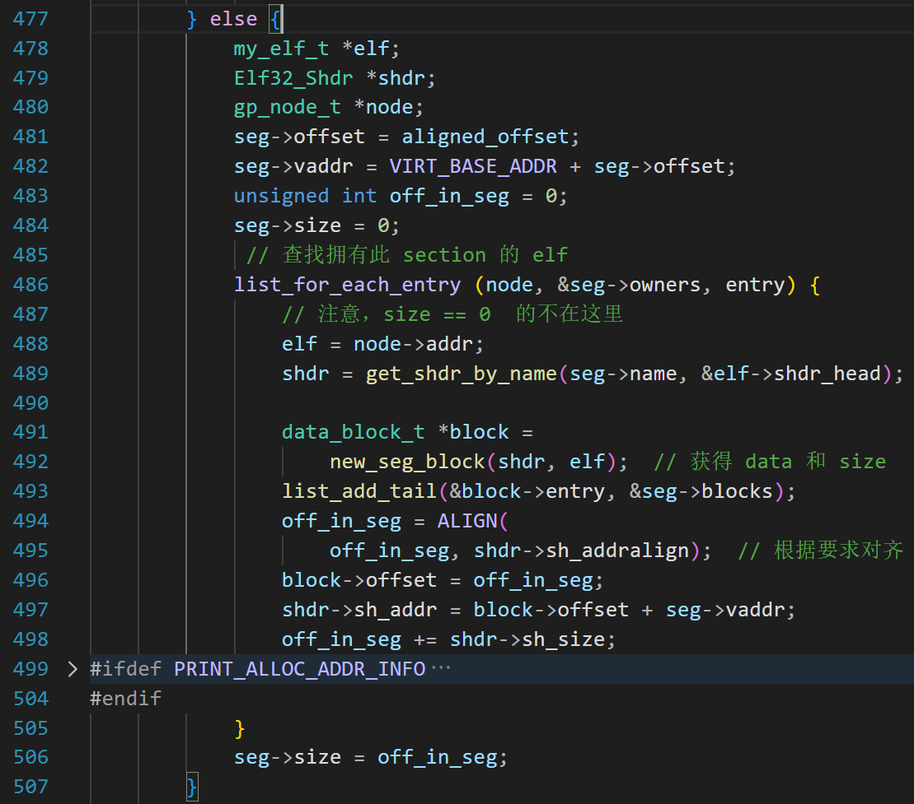
进入 else 的时候，seg 就指向数组 linker->segs[] 的下一个元素了；
第 481 行，填写这个段的偏移（就是刚才对齐后的地址）;
第 482 行，计算段的虚拟地址;
第 483 行，变量 off_in_seg 表示段内的偏移，初始值是 0;
第 484 行，段的大小设置为 0;
第 486 行，之前我们已经把拥有某个节的文件加入到了 seg->owners 链表里面，现在遍历这个链表，取出 elf （.o 对应的 my_elf_t 结构）;
第 489 行，根据 seg->name 查找节头表;
第 492 行，创建 block，获得这个节的大小和数据，可以认为 block 就是这个节（section）;
第 493 行，把 block 加入这个段的 blocks 链表;
第 494 行，在把 block 拼接到此段之前，先按照要求对齐;
第 496 行，对齐后，这个 block 在段里面的偏移就确定了;
第 497 行，段的虚拟地址已经定了，节在段里面的偏移也定了，那么节的虚拟地址就出来了;
第 498 行，想象把这个节放到了段里面，off_in_seg 肯定要增加，增加节的大小;
如果 seg->owners 链表还有未处理的节点，那就处理下一个节点（回到第 486 行）;
下面我们详细说第 492 行的代码。
1 | |
第 4 行，数据指针，初始化的时候会分配空间;
第 5 行，段内的偏移，和段的基地址没有关系;
第 6 行，和 section 的 sh_size 一致;
第 7 行，这是一个指针，指向生成它的节头表项;
第 8 行，用来加入seg_t 的 blocks 链表;
假设某个段由 10 个 .o 的.text 节组成，那么 seg->blocks 链表上就有 10 个 block。
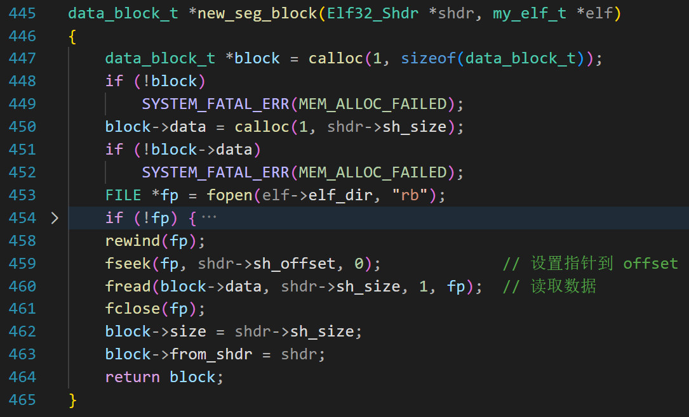
此函数的作用是创建一个 block，并读取某个节的数据，最后把 block 加入到 seg->blocks 链表;
此函数有 2 个参数，第一个表示这个 block 是由哪个节创建的，第二个参数表示此节来自哪个 .o;
第 450 行，根据节表项的 sh_size 字段，分配内存，这片内存用来存段的实际内容;
第 453 行，打开 .o 文件;
第 459 行，让文件位置指针移动到这个节的开始;
第 460 行，读取节的数据到 block->data 指向的内存;
第 462 行，填写数据大小;
符号地址解析
当地址分配完成后，每个段的虚拟地址就确定了。
此时可以做符号地址解析。
具体分为 3 个步骤
1、扫描 linker->sym_defs 链表，也就是导出符号，计算导出符号的虚拟地址;
2、扫描 linker->sym_refs 链表，也就是导入符号，把步骤 1 计算出的地址传递到引用该符号的 .o 的符号表内;
3、确定所有 .o 中局部符号的地址。
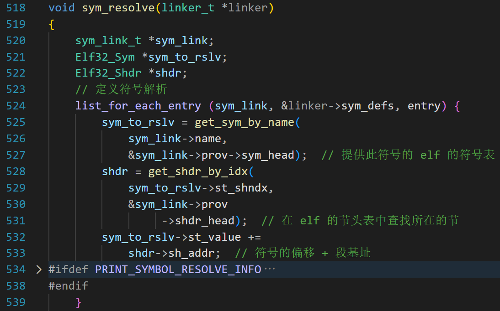
第 524 行，遍历导出符号的链表;
525~527：根据符号的名字，在定义此符号的 .o 的符号表中查找，返回 Elf32_Sym 结构;
528 ~ 531：根据此符号的 st_shndx，查找此符号所属的节，进而得到节的虚拟地址;
532~533：符号在节内的偏移加上节的虚拟地址，就是符号的最终地址。
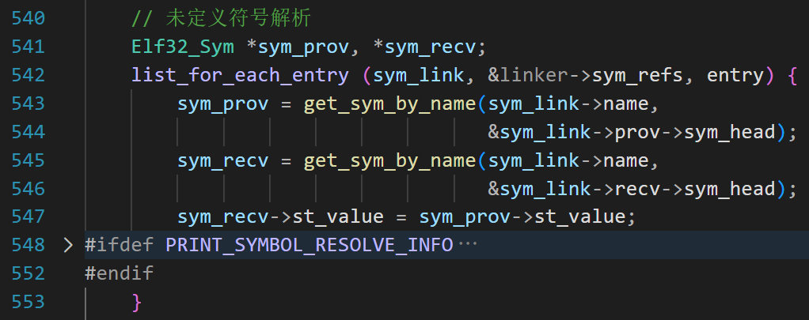
第 542，扫描导入符号的链表;
第 543~546，根据符号的名字，先在定义此符号的 .o 的符号表中查找 Elf32_Sym 结构，再在引用此符号的 .o 的符号表中查找 Elf32_Sym 结构;
第 547 行， sym_recv->st_value = sym_prov->st_value; 把符号的最终地址传递到引用该符号的 .o 的符号表内;
另外，局部符号也需要计算地址。
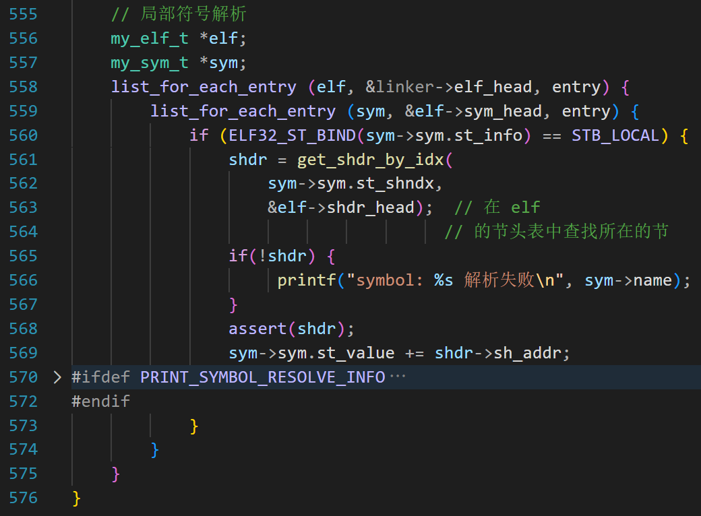
第 558~559 行，遍历所有 .o 的符号表;
第 560 行，取出本地符号，根据符号所属的节，得到节的 Elf32_Shdr 结构;
第 569 行，符号在节内的偏移加上节的虚拟地址，就是符号的最终地址
符号的重定位
因为前面针对符号的重定位做了很多铺垫，所以直接看代码。
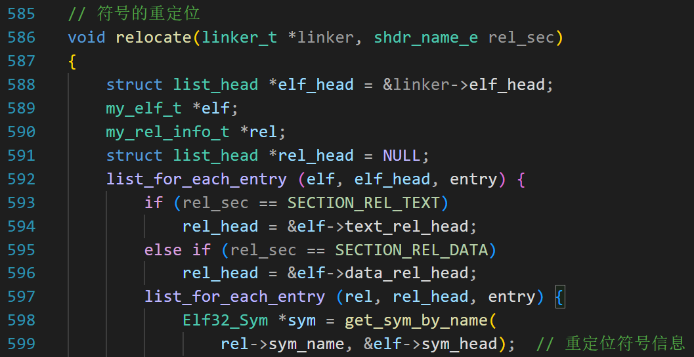
第二个参数可以是 SECTION_REL_TEXT 或者 SECTION_REL_DATA，针对代码段或数据段的重定位都会调用这个函数;
第 592，遍历 .o 文件;
第 593~596：根据参数选择 text_rel_head 或者 data_rel_head 链表;
第 597，遍历 text_rel_head 或者 data_rel_head 链表;
第 598，根据符号名字查找 .o 的符号表，取出需要重定位的符号;
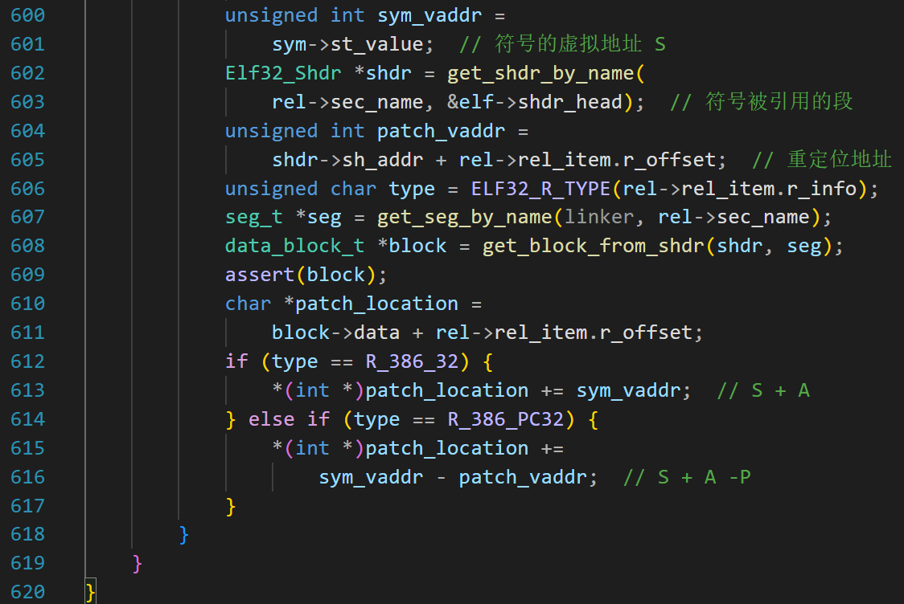
第 600~601，得到此符号的虚拟地址;
第 602 行：找到符号被引用的节;
第 604 行：节的虚拟地址加上 r_offset 就是要打补丁的地方，我们需要修改这个位置的数据;
第 606 行：提取重定位类型;
因为每个节的内容都保存到 block 结构中了，现在需要找到那个 block，然后精确到 block 中的某 4 个字节;
第 607 行：根据节的名字找到 seg_t 结构;
第 608 行：遍历 seg 的 blocks 链表，找到这个节对应的 block，代码比较简单;
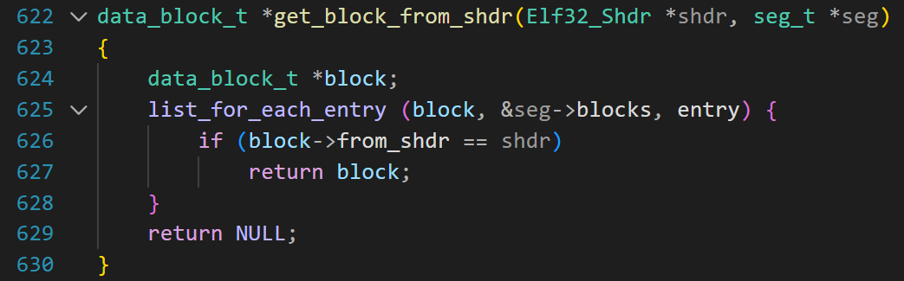
第 610~611 行，因为 block->data 指向此节内容的起始位置， block->data 加上 r_offset 就找到了要修改的那 4 个字节;
第 612，如果是绝对重定位，公式是 S + A，即把符号的虚拟地址累加到加数上（加数就在原地）;
第 615，如果是相对重定位，我们再推导一下公式;
P 表示打补丁的位置（虚拟地址）
相对地址 = S -下一条指令的地址
= S - (P + 4)
= S - P - 4
= S + (-4) - P
= A + (S - P)
所以把 (S - P) 累加到加数上;
至此，重定位完成。
整个链接过程基本完成，就差组装和输出可执行文件了。胜利就在眼前！